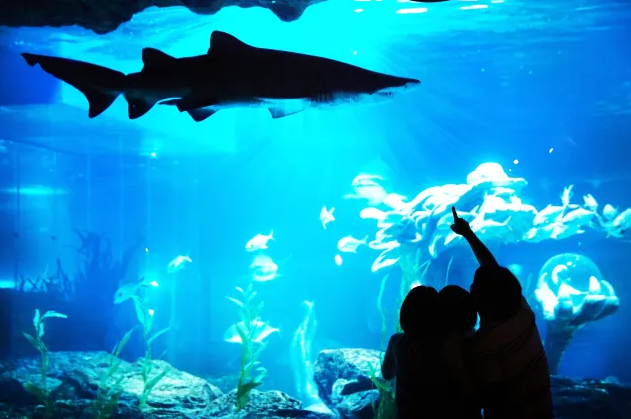
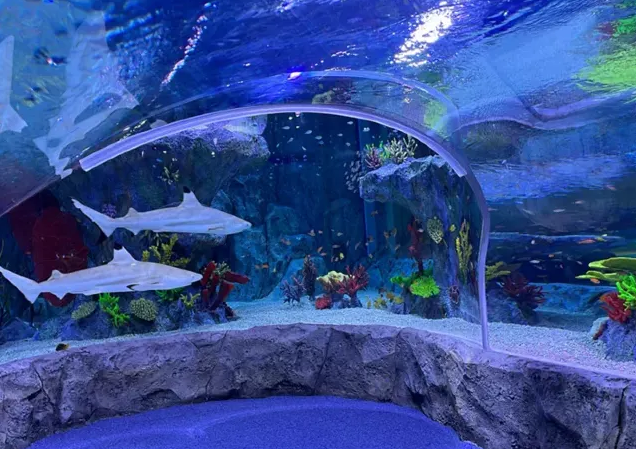
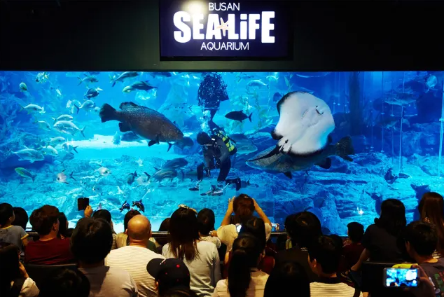
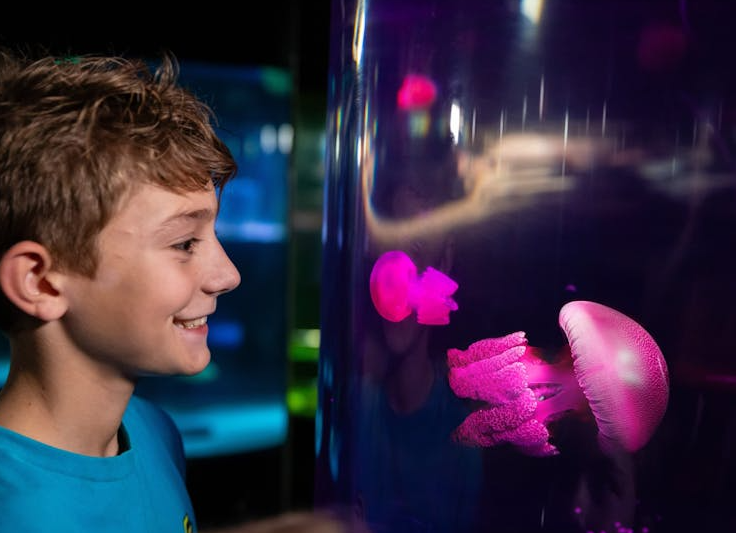

An Oceanic Journey in the City
Nestled in the bustling heart of Bangkok, SEA LIFE Bangkok Ocean World stands as one of Southeast Asia's most impressive aquarium experiences. This underwater wonderland transports visitors from the urban chaos above to the serene depths below, offering an immersive journey through diverse marine ecosystems. Whether you're a marine biology enthusiast or simply seeking a unique escape from the city's heat, this aquarium promises discoveries at every turn.
The facility, inspired by world-class visitsealife attractions like those found in Sydney, brings the same level of marine conservation and educational excellence to Thailand. As you step inside, the temperature drops, the ambient lighting shifts to oceanic blues, and the sound of bubbling water replaces street noise. It's an immediate sensory transformation that sets the stage for what lies ahead.
Exploring Diverse Marine Habitats
The aquarium is thoughtfully divided into themed zones, each representing different marine environments. The coral reef section bursts with life—neon-colored fish dart between vibrant corals, while larger species like groupers and rays glide gracefully overhead. This section particularly showcases the delicate balance of reef ecosystems and the importance of ocean conservation efforts.
Moving deeper into the facility, visitors encounter the mysterious deep-sea zone. Here, bioluminescent creatures and strange-looking fish adapted to extreme pressures create an otherworldly atmosphere. The dim lighting and carefully designed tanks replicate the conditions of the deep ocean, making this section a favorite among photography enthusiasts. The visitsealife team has masterfully recreated these challenging environments, allowing visitors to witness species rarely seen outside of documentaries.
Interactive Experiences and Educational Programs
What sets this aquarium apart is its commitment to hands-on learning. The touch pool area allows visitors to gently interact with sea stars, sea urchins, and other tide pool creatures under the guidance of knowledgeable staff. This tactile experience creates lasting memories, especially for younger visitors who might be experiencing marine life up close for the first time.
The penguin expedition is another highlight, offering an intimate look into the daily lives of these charismatic birds. The habitat replicates their natural environment with carefully controlled temperatures and rock formations. Watching penguins dive, swim, and interact provides both entertainment and education about their behavior and the challenges they face in the wild. Similar to visitsealife facilities worldwide, the Bangkok location emphasizes conservation messaging throughout these interactive zones.
Regular feeding demonstrations and educational talks are scheduled throughout the day, providing insights into marine biology, conservation challenges, and what individuals can do to protect ocean ecosystems. These programs align with the visitsealife mission of inspiring ocean conservation through education and engagement.
Planning Your Visit
Located conveniently in Bangkok's city center, the aquarium is easily accessible by BTS Skytrain or taxi. The facility operates daily from 10:00 AM to 8:00 PM, with last admission at 7:00 PM. Early December visits offer a pleasant escape from the city's heat, making it an ideal time to explore at a relaxed pace.
To maximize your experience, consider purchasing tickets online in advance through the visitsealife website. Online bookings often include discounts and help you avoid queues, especially during peak tourist seasons. The facility also offers combination tickets with other nearby attractions, making it easy to plan a full day of exploration in Bangkok.
For the best viewing experience, plan to spend at least two to three hours exploring all exhibits. The aquarium is designed with wide pathways and multiple viewing angles, ensuring comfortable navigation even during busier periods. Photography is encouraged throughout most areas, though flash photography is restricted to protect the marine life.
Conservation and Future Impact
Beyond entertainment, SEA LIFE Bangkok Ocean World plays a crucial role in marine conservation efforts. The facility participates in breeding programs for endangered species, conducts research on marine ecosystems, and supports ocean cleanup initiatives. By visiting, guests contribute to these important conservation programs, making each ticket purchase a small but meaningful act of environmental stewardship.
The educational impact extends beyond the aquarium walls. Many visitors leave with a deeper appreciation for marine life and a better understanding of the threats facing our oceans—from plastic pollution to climate change. This awareness-raising mission aligns perfectly with the global visitsealife network's commitment to ocean protection.
As you exit the aquarium and return to Bangkok's vibrant streets, the underwater wonderland you've just explored serves as a powerful reminder of the beauty and fragility of marine ecosystems. Whether you're planning your first visit or returning to discover new exhibits, SEA LIFE Bangkok Ocean World offers an unforgettable journey into the depths, right in the heart of one of Asia's most dynamic cities.